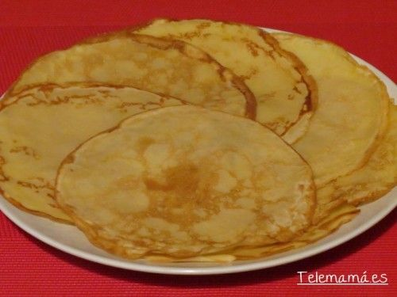
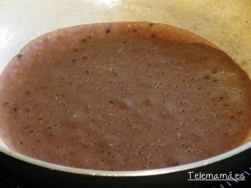

Ingredientes
General
- 1 vaso de harina
- 1 y 1/2 de leche
- 50 gr de mantequilla (podemos sustituir por 50 ml de aceite de girasol)
- 1 cucharada de sal (salados)
- 2 cucharadas soperas de azúcar (dulces)
- 2 cucharadas de cacao en polvo (chocolate)
Pasos a seguir
Elaboracion Paso a paso
- En un bol ponemos la harina, la leche, el azúcar y la mantequilla (que sacamos antes para calentar a temperatura ambiente) y mezclamos. Podemos ayudarnos con productos eléctricos. Si queremos hacerlo dulce le echamos azúcar, si por el contrario le echamos sal, y por último también podemos hacer chocolate y le añadimos cacao y volvemos a mezclar y lo metemos en la nevera para que se endurezca durante 20-30 minutos.
- Luego lo sacamos y preparamos una sartén antiadherente que ponemos a calentar.
- Con un cacillo vamos echando a la sartén y moviendo la suavemente para extender la masa y quede muy fina sobre la superficie de la sartén.

- Cuando empieza a despegar damos la vuelta para que se haga del otro lado y apartamos sobre un plato e iremos sacando según se nos vayan haciendo.

- A la mitad de la masa he incorporado 1 cucharada de cacao en polvo sin azúcar y batimos bien para que se mezcle y ahora hacemos algunos de chocolate, así de sencillo y buenos.

- Una vez listo los vamos rellenando de chocolate, nata, fruta, mermeladas, confituras y de todo lo que se nos ocurra y nos guste.